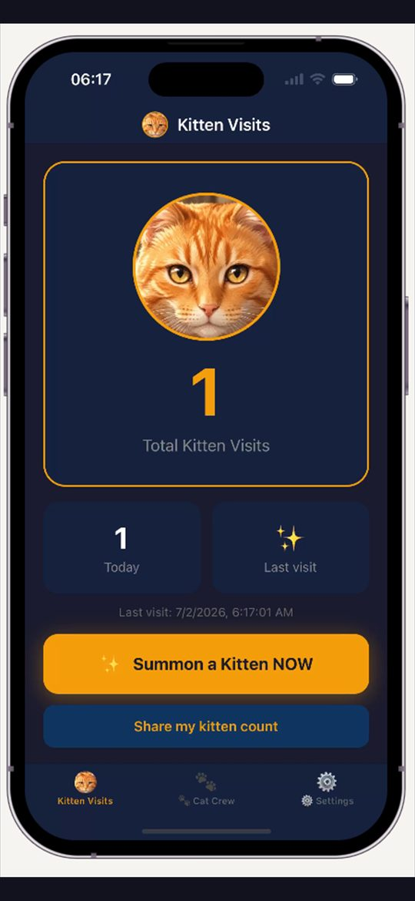
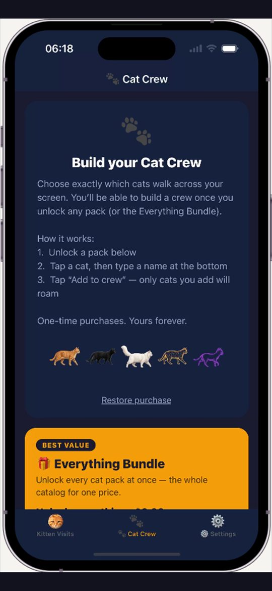
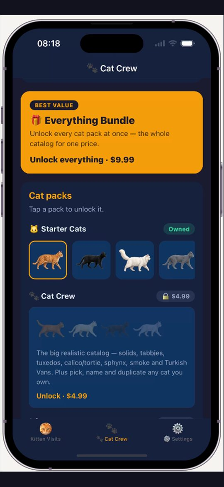
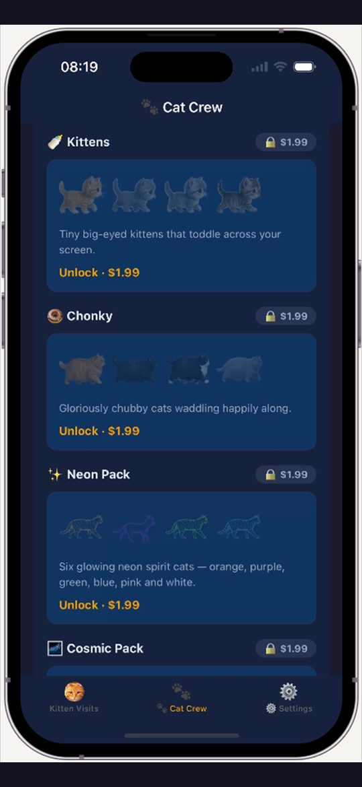

A cat on your screen.
Realistic cats walk across your phone while you do other things, then wander off. No ads, no accounts, no subscriptions.

iPhone
Android
Realistic cats walk across your phone while you do other things, then wander off. No ads, no accounts, no subscriptions.
On Android, Catlas uses the screen overlay so a cat can stroll across whatever you're doing — texting, scrolling, watching — then wander off.
Tap to summon a cat right now, or let surprise cats visit on their own. Rare cameos, a steady parade, or a custom timer.
Dozens of photoreal cats to collect and name. Adjustable size from tiny to screen-filling. Optional purrs and gentle haptics.
Medals for walks, taps, streaks, day and night visits and collecting breeds. Unlock exclusive Medal Cats and free packs.
No tracking, no subscriptions. Optional one-time packs unlock more cats. Everything stays on your device.
On iOS your cat sends a visit alert — tap it and the cat walks across the app. Same visit, different front door.




On Android, Catlas uses the "display over other apps" permission so a cat can walk on top of whatever app you're using. On iPhone, your cat sends a visit alert; tap it and the cat strolls across the app.
Yes. The app and the starter cats are free, with no ads and no account. Optional one-time packs unlock more cats — never a subscription.
Yes — Catlas is on the App Store and Google Play. iOS doesn't allow apps to draw over other apps, so on iPhone the cat visits inside Catlas after a notification.
Pretty much. Catlas is a screen pet: realistic cats rather than pixel art or anime, and they leave when their walk is done instead of living on your screen all day.
Dozens of cats to collect and name — tabbies, calicos, tuxedos, Maine Coons, Siamese, Ragdolls, Scottish Folds, chonky floofs, kittens, glowing Neon spirits, Cosmic galaxy cats, Wild Cats and a city-stomping Kaiju cat. Earn 81 medals as cats visit you, and unlock exclusive Medal Cats.
No. There are no accounts, no ads and no third-party tracking. Your cats, names and settings stay on your device. Purchases are handled by the app stores.